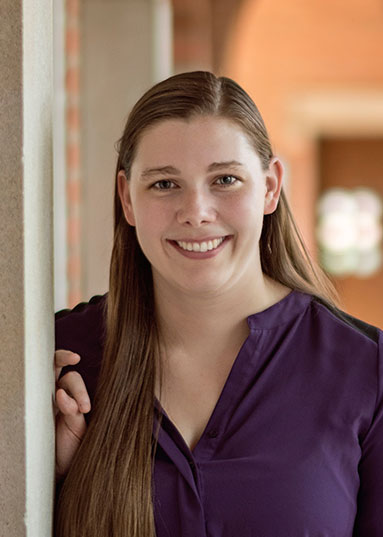

Course Overview
Spring
RSVP for Final Pitch DayBioVentures is a 10 week, hands-on immersion into life science entrepreneurship, where teams of four students begin with nascent intellectual property, conduct market diligence, identify a commercially viable product, and create a commercialization plan, culminating in a refined investor pitch. Each team will be mentored by experienced medical entrepreneurs. Bioventures gives students practical experience commercializing medical research by reducing complex medical concepts to clear value propositions.
The first two iterations of the course helped launched companies that are still active today. After completing Bioventures in Spring 2014, Luminostics has gone on to receive grant funding, further develop their prototypes, and recently participated in the Y combinator accelerator program in Summer 2016. In the Bioventures 2015 cohort, the winners, Nangiotex, incorporated their company and have participated in accelerator programs in Boston and New York. Other participants of bioventures are actively involved in the Houston community at companies and institutes including DNAtrix, advanced electrophoresis systems, Cancer Moonshots, and others.
Class Format
Core lectures consist of a combination of interactive, problem-based “practical” from the faculty and talks from visiting life science entrepreneurs. The project component is a “hands-on” experience where students will work in teams on their respective IP and develop business plans.
Intellectual Property
The course will provide access to pre-screened patents, patent applications, or disclosures related to novel therapeutics, diagnostics, medical devices or life science research tools. Students may develop their business concepts based on these inventions. The Students will NOT be restricted to working on this pre-vetted intellectual property, but encouraged to conceptualize commercial applications of their own respective research projects.
Mentors
Each student team will be guided by an experienced life science executive with domain specific knowledge. You will be assigned a primary mentor, a student mentor and have ad hoc access to secondary mentors. Remember the role of a mentor is to guide, provide feedback and access to resources. They are NOT the “CEO” of your business concepts.
2017 Course Schedule
Course will run Thursdays from 6-9pm at the BioScience Research Collaborative
Topics will include:
- Product
- Market
- Venture Capital
- Milestones
- Law
- Regulatory
If you have not yet taken MGMT 633, please take the course concurrently with Bioventures.
| Date | Lecture Topics | Speakers | Assignments |
|---|---|---|---|
| Jan 19 | Casey Cunningham | Review terms of seed/series A rounds of 3-4 new companies, Read "Term Sheets and Valuations" | |
| Jan 26 | David Franklin, Upendra Marathi | Define target product profile, competition, comparable transactions | |
| Feb 2 |
|
Bioventures Alumni | Differentiation from competitors |
| Feb 9 |
|
Estella Von Chong | Define regulatory development path milestones and budget |
| Feb 16 |
|
Tim McGrath | Financing strategy: Value creating milestones to starting and building the business post seed round, and budget |
| Feb 23 |
|
Atul Varadhachary | First draft of executive summary |
| Mar 2 |
|
TBA | Finalize presentation |
| Mar 9 |
|
Asha Rajagopal | Finalize presentation |
| Mar 16 |
|
Jacob Setterbo | Revise executive summary |
| Mar 23, 5-8pm, TMC|x |
|
Judges: TBA |
Course Directors
Upendra Marathi, PhD, MBA
Dr. Marathi is the founder, investor, and an inventor of 7 Hills Pharma LL. He also serves as the Senior Vice President at PLx Pharma Inc. where he has led the development of three novel pain and cardiovascular drugs. One product has recently been approved by the FDA. He has helped raise over $50 million in equity financing, and has been awarded $3.5 million in translational research grants. He co-developed one of the first genetically modified stem cells to improve bone marrow function in chemotherapeutic patients. He was previously with BCM Technologies, the venture subsidiary and incubator for the Baylor College of Medicine where he was involved in the founding and launch of several biotechnology companies. Prior to BCMT, Upendra was a post-doctoral fellow at St. Jude Children’s Research Hospital and MD Anderson Cancer Center, and earned a PhD in Pharmacology from Loyola University Chicago. Upendra has an M.B.A. from and served on the Faculty of Rice University.

Stan Watowich, PhD
Dr. Watowich is Associate Professor in the Department of Biochemistry and Molecular Biology at the University of Texas Medical Branch at Galveston (UTMB). His current research efforts merge advanced computational and structural biology approaches to develop treatments for infectious diseases. He was a founding member of UTMB’s renowned Sealy Center for Structural Biology, launched UTMB’s Molecular Therapeutics Initiative, spearheaded UTMB's recent Innovation Challenge, and developed the "Business Innovation for Successful Entrepreneurship" course in partnership with UT-Austin McCombs School of Business. He serves as consultant for drug discovery projects in developing countries, most recently working with scientists in Colombia to discover new drugs to combat Leishmaniasis. In addition, he founded Ridgeline Therapeutics and serves as Research Director for the Southwest Electronic Energy Research Foundation. He received his B.A. from Carleton College, his PhD from University of Chicago, and did post-doctoral studies at Harvard University before migrating south and joining the faculty of UTMB.

Emily Evans
Emily is a Rice PhD student studying cancer nanoimmunotherapy supported by the Rice/MD Anderson T32 for Translational Cancer Nanotechnology. A bioventures 2015 alum, she has continued to engage in the Houston life science entrepreneurship community as an intern with Fannin Innovation Studio, Health 2.0 chapter lead, and as a core team member of enventure. In 2016, she has been bolstering the BYOBrainstorm program to promote ideation and team formation as an ideal lead up to Bioventures 2017.

Stacey Kalovidouris, PhD
Dr. Kalovidouris is Rice’s Executive Director of Health-Related Research and Educational Initiatives in the Office of the Advisor to the Provost. In this role, she facilitates health-related cross-disciplinary research and education, fosters ties with the Texas Medical Center, creates partnerships with industry and promotes the translation of health-related research.
Prior to her current position, Dr. Kalovidouris was the Executive Director of Rice’s Institute of Biosciences and Bioengineering and she also was a Senior Scientist for Calando Pharmaceuticals, a biopharmaceutical company providing targeted therapeutics for the development of nanoparticle drug formulations. Dr. Kalovidouris completed her postdoctoral training at the California Institute of Technology and holds a PhD in Chemistry from the University of California at Los Angeles, where she was trained by the 2016 Nobel Laureate in Chemistry, Sir J Fraser Stoddart. She received her BA degree in Biochemistry from Swarthmore College.
Course Founder

Simran Madan
Ms. Madan is an HHMI Med into Grad pre-doctoral fellow in the Translation Biology and Molecular Medicine Program at Baylor College of Medicine. She is a member of the core team of Enventure, a Houston based non-profit focused at providing resources to early stage medical and life science companies and educating and building the entrepreneurial community in Houston. She has been one of the leading members in the conception and development of this course. Simran was a student in the first offering of the course in 2014 and was a member of the Riha Life team, which tied for first place on the final pitch day. She received her B.S. in Cell and Molecular Biology from the University of Texas at Austin. Her current research focus is urea cycle disorders and osteosarcoma. She has received a CPRIT pre-doctoral fellowship for her work on osteosarcoma.
Upendra Marathi, PhD, MBA
Dr. Marathi is the founder, investor, and an inventor of 7 Hills Pharma LL. He also serves as the Senior Vice President at PLx Pharma Inc. where he has led the development of three novel pain and cardiovascular drugs. One product has recently been approved by the FDA. He has helped raise over $50 million in equity financing, and has been awarded $3.5 million in translational research grants. He co-developed one of the first genetically modified stem cells to improve bone marrow function in chemotherapeutic patients. He was previously with BCM Technologies, the venture subsidiary and incubator for the Baylor College of Medicine where he was involved in the founding and launch of several biotechnology companies. Prior to BCMT, Upendra was a post-doctoral fellow at St. Jude Children’s Research Hospital and MD Anderson Cancer Center, and earned a PhD in Pharmacology from Loyola University Chicago. Upendra has an M.B.A. from and served on the Faculty of Rice University.
Stan Watowich, PhD
Dr. Watowich is Associate Professor in the Department of Biochemistry and Molecular Biology at the University of Texas Medical Branch at Galveston (UTMB). His current research efforts merge advanced computational and structural biology approaches to develop treatments for infectious diseases. He was a founding member of UTMB’s renowned Sealy Center for Structural Biology, launched UTMB’s Molecular Therapeutics Initiative, spearheaded UTMB's recent Innovation Challenge, and developed the "Business Innovation for Successful Entrepreneurship" course in partnership with UT-Austin McCombs School of Business. He serves as consultant for drug discovery projects in developing countries, most recently working with scientists in Colombia to discover new drugs to combat Leishmaniasis. In addition, he founded Ridgeline Therapeutics and serves as Research Director for the Southwest Electronic Energy Research Foundation. He received his B.A. from Carleton College, his PhD from University of Chicago, and did post-doctoral studies at Harvard University before migrating south and joining the faculty of UTMB.
Emily Evans
Emily is a Rice PhD student studying cancer nanoimmunotherapy supported by the Rice/MD Anderson T32 for Translational Cancer Nanotechnology. A bioventures 2015 alum, she has continued to engage in the Houston life science entrepreneurship community as an intern with Fannin Innovation Studio, Health 2.0 chapter lead, and as a core team member of enventure. In 2016, she has been bolstering the BYOBrainstorm program to promote ideation and team formation as an ideal lead up to Bioventures 2017.
Stacey Kalovidouris, PhD
Dr. Kalovidouris is Rice’s Executive Director of Health-Related Research and Educational Initiatives in the Office of the Advisor to the Provost. In this role, she facilitates health-related cross-disciplinary research and education, fosters ties with the Texas Medical Center, creates partnerships with industry and promotes the translation of health-related research.
Prior to her current position, Dr. Kalovidouris was the Executive Director of Rice’s Institute of Biosciences and Bioengineering and she also was a Senior Scientist for Calando Pharmaceuticals, a biopharmaceutical company providing targeted therapeutics for the development of nanoparticle drug formulations. Dr. Kalovidouris completed her postdoctoral training at the California Institute of Technology and holds a PhD in Chemistry from the University of California at Los Angeles, where she was trained by the 2016 Nobel Laureate in Chemistry, Sir J Fraser Stoddart. She received her BA degree in Biochemistry from Swarthmore College.
Simran Madan
Ms. Madan is an HHMI Med into Grad pre-doctoral fellow in the Translation Biology and Molecular Medicine Program at Baylor College of Medicine. She is a member of the core team of Enventure, a Houston based non-profit focused at providing resources to early stage medical and life science companies and educating and building the entrepreneurial community in Houston. She has been one of the leading members in the conception and development of this course. Simran was a student in the first offering of the course in 2014 and was a member of the Riha Life team, which tied for first place on the final pitch day. She received her B.S. in Cell and Molecular Biology from the University of Texas at Austin. Her current research focus is urea cycle disorders and osteosarcoma. She has received a CPRIT pre-doctoral fellowship for her work on osteosarcoma.
Invited Speakers
-
Casey Cunningham, Sante Ventures
-
David Franklin, co-Founder and Managing Director, Houston Health Ventures
Mr. Franklin has over 10 years of experience in business management consulting, corporate strategy, operations, marketing, business development, sales, and venture capital. He currently serves as Executive Vice President at Consumer Media Network (CMN), LLC, a lead generation company. Previously, David was Co-founder and Managing Partner at DCF Ventures, LLC. DCFV provided feasibility analyses, market analyses, company incorporation, university licensing, startup consulting, interim management, grant writing, and fundraising services. In this role, David also served as CEO pro tem for CytoScale Diagnostics, LLC, RadMit Pharma, LLC and FloVision, LLC. At DaVita, Inc. David served as a Corporate Strategy Associate where he formulated market growth and strategic operations plans, led the national clinical outcomes team for @Home, increased IT and clinical research resources and created new clinical reports/scoring. He also acted as Interim VP of Marketing for @Home. Prior to DaVita, David was a Business Management Consultant at Accenture. David holds his MBA from UCLA Anderson where he was a Venture Capital, Young Presidents’ Organization (YPO), and Technology and Innovation Partners (TIP) fellow. David received his B.S.E. in Bio-Medical & Electrical Engineering with minors in Economics & Chemistry from Duke University. David was also part of Devil’s Delivery Service, Inc., a food delivery business owned by 42 student shareholders generating over $850K in annual revenues. David was elected to Comptroller, CFO, and CEO positions and was responsible for increasing profitability 30% as CEO. David completed internships at Siemens AG; General Electric Co. (US Patent #6,789,427 Phased Array Ultrasound); and Procter & Gamble Co. David enjoys water and snow skiing, golf, and flying remote control airplanes.
-
Estella Von Chong
Ms. Von Chong is a Regulatory Affairs professional with three years of experience working in the biotech and pharmaceutical industry. Currently, she is the Regulatory Affairs Manager at PLx Pharma LLC, where she supports all aspects of regulatory and quality operations including the management, preparation and submission of regulatory reports and correspondence for both INDs and supplemental NDA submissions for an approved OTC product, performs regulatory analyses of drug labeling and packaging, proprietary naming and new drug product exclusivity. She has also collaborated in the development of regulatory strategies and implementation plans for the preparation of line extensions for the company’s lead product. Prior to working at PLx, Estela was a Compliance Specialist at QACV Consulting, LLC where she provided quality assurance, compliance and validation consulting to FDA-regulated industries. She has experience in computer systems compliance and validation, as well as experience in the development of quality management systems and strategies for compliance with Good Clinical, Manufacturing, and Laboratory Practices quality standards. Estela received her Master’s in Biotechnology as well as her B.S. in Biomedical Engineering from Texas A&M University. Estela is also a member of the Regulatory Affairs Professional Society, and she has achieved the RAC-US Credential.
-
Tim McGrath, MS, Manager, Business Development, AM Biotech
Mr. McGrath is the Manager, Business Development for AM. As the former CEO of Xeotron he raised over $4M from corporate investors and managed the sale of Xeotron to Invitrogen. While President of Sigma-Genosys, sales grew from $2M to over $40M and he negotiated numerous licenses and marketing agreements. He managed the sale of Genosys to Sigma-Aldrich. Sigma-Genosys was started based technology developed and licensed from the Baylor College of Medicine. Mr. McGrath has a B.S. in Zoology and an M.S. in Biochemistry from Texas A&M University.
-
Atul Varadhachary, MD, PhD, Managing Partner, Fannin Innovation Studio
Dr. Varadhachary is Managing Partner at Fannin Innovation Studio (formerly AlphaDev, LLC.), Houston’s leading early-stage life sciences development group. Fannin helps commercialize innovative technology originating in the Texas Medical Center and elsewhere. He works closely with innovators, contributing active management and seed capital, and leverage non-dilutive and grant funding from the NIH, philanthropy, and the state of Texas to multiply the return on investor dollars. Atul brings over two decades of experience in life sciences and healthcare in both corporate and entrepreneurial settings. Before Fannin, Atul served as President of U.S. Operations at Reliance Life Sciences (RLS), part of the Reliance Group, India’s largest private sector enterprise with over $70 billion in annual revenues. Atul served for nine years as President & COO of Agennix, Inc., a late-stage biotechnology company where he led advancement of Agennix’s lead molecule from preclinical studies into pivotal Phase 3 human studies and helped lead a successful sale of the company. Atul also served as Senior Engagement Manager at the global management consulting firm, McKinsey & Co. Atul has served as an Adjunct Professor at the Baylor College of Medicine at the Jones Graduate School of Management at Rice University, and the University of Texas School of Public Health. He serves on the Life Sciences Advisory Committee of the Houston Technology Center, on the BioHouston Advisory Board and on the boards of the Center for Public Policy Priorities (CPPP) and of several private companies. He served for four years on the Board of Managers of the Harris Health System (Harris County Hospital District), and has served on the University of Houston Biotechnology Industrial Advisory Committee, and on the Board and as President of the Indo-American Chamber of Commerce of Greater Houston. He served for five years as President of Pratham USA and is on the Board of the Pratham Education Foundation, one of the largest educational non-profits in the world. Atul received his medical training at the University of Bombay. He earned a PhD in Physiology followed by a postdoctoral fellowship in Biological Chemistry, both from the Johns Hopkins School of Medicine in Baltimore, where he also served as a member of the Medical School Council and as founding President of the Johns Hopkins Postdoctoral Association.
-
Asha Rajagopal, Director, Rice Tech Transfer
-
Jacob Setterbo, PhD, Director of Grants, Paradigm Partners
Dr. Setterbo is Director of Grants at Paradigm Partners, where he helps life science companies obtain non-dilutive funding. Jacob focuses on small business grants (SBIR/STTRs) from the National Institutes of Health (NIH). He has provided consultation and technical writing for various therapeutic areas across the spectrum of NIH’s interests, including pharmaceuticals, medical devices, digital health, and health care delivery. Jacob assists with experimental design and commercialization components of each project. Jacob regularly vets early-stage companies with respect to innovation and commercial potential to determine their applicability for grants. As part of this process, Jacob evaluates business plans, market analyses, existing literature, patent portfolios, and Food and Drug Administration (FDA) meeting minutes. Jacob has also served as a reviewer for the Texas Emerging Technology Fund and for multiple journal articles. Jacob received a PhD in Biomedical Engineering from University of California, Davis and a B.S. in Civil Engineering from The University of Texas at Austin.
Casey Cunningham, Sante Ventures
David Franklin, co-Founder and Managing Director, Houston Health Ventures
Mr. Franklin has over 10 years of experience in business management consulting, corporate strategy, operations, marketing, business development, sales, and venture capital. He currently serves as Executive Vice President at Consumer Media Network (CMN), LLC, a lead generation company. Previously, David was Co-founder and Managing Partner at DCF Ventures, LLC. DCFV provided feasibility analyses, market analyses, company incorporation, university licensing, startup consulting, interim management, grant writing, and fundraising services. In this role, David also served as CEO pro tem for CytoScale Diagnostics, LLC, RadMit Pharma, LLC and FloVision, LLC. At DaVita, Inc. David served as a Corporate Strategy Associate where he formulated market growth and strategic operations plans, led the national clinical outcomes team for @Home, increased IT and clinical research resources and created new clinical reports/scoring. He also acted as Interim VP of Marketing for @Home. Prior to DaVita, David was a Business Management Consultant at Accenture. David holds his MBA from UCLA Anderson where he was a Venture Capital, Young Presidents’ Organization (YPO), and Technology and Innovation Partners (TIP) fellow. David received his B.S.E. in Bio-Medical & Electrical Engineering with minors in Economics & Chemistry from Duke University. David was also part of Devil’s Delivery Service, Inc., a food delivery business owned by 42 student shareholders generating over $850K in annual revenues. David was elected to Comptroller, CFO, and CEO positions and was responsible for increasing profitability 30% as CEO. David completed internships at Siemens AG; General Electric Co. (US Patent #6,789,427 Phased Array Ultrasound); and Procter & Gamble Co. David enjoys water and snow skiing, golf, and flying remote control airplanes.
Estella Von Chong
Ms. Von Chong is a Regulatory Affairs professional with three years of experience working in the biotech and pharmaceutical industry. Currently, she is the Regulatory Affairs Manager at PLx Pharma LLC, where she supports all aspects of regulatory and quality operations including the management, preparation and submission of regulatory reports and correspondence for both INDs and supplemental NDA submissions for an approved OTC product, performs regulatory analyses of drug labeling and packaging, proprietary naming and new drug product exclusivity. She has also collaborated in the development of regulatory strategies and implementation plans for the preparation of line extensions for the company’s lead product. Prior to working at PLx, Estela was a Compliance Specialist at QACV Consulting, LLC where she provided quality assurance, compliance and validation consulting to FDA-regulated industries. She has experience in computer systems compliance and validation, as well as experience in the development of quality management systems and strategies for compliance with Good Clinical, Manufacturing, and Laboratory Practices quality standards. Estela received her Master’s in Biotechnology as well as her B.S. in Biomedical Engineering from Texas A&M University. Estela is also a member of the Regulatory Affairs Professional Society, and she has achieved the RAC-US Credential.
Tim McGrath, MS, Manager, Business Development, AM Biotech
Mr. McGrath is the Manager, Business Development for AM. As the former CEO of Xeotron he raised over $4M from corporate investors and managed the sale of Xeotron to Invitrogen. While President of Sigma-Genosys, sales grew from $2M to over $40M and he negotiated numerous licenses and marketing agreements. He managed the sale of Genosys to Sigma-Aldrich. Sigma-Genosys was started based technology developed and licensed from the Baylor College of Medicine. Mr. McGrath has a B.S. in Zoology and an M.S. in Biochemistry from Texas A&M University.
Atul Varadhachary, MD, PhD, Managing Partner, Fannin Innovation Studio
Dr. Varadhachary is Managing Partner at Fannin Innovation Studio (formerly AlphaDev, LLC.), Houston’s leading early-stage life sciences development group. Fannin helps commercialize innovative technology originating in the Texas Medical Center and elsewhere. He works closely with innovators, contributing active management and seed capital, and leverage non-dilutive and grant funding from the NIH, philanthropy, and the state of Texas to multiply the return on investor dollars. Atul brings over two decades of experience in life sciences and healthcare in both corporate and entrepreneurial settings. Before Fannin, Atul served as President of U.S. Operations at Reliance Life Sciences (RLS), part of the Reliance Group, India’s largest private sector enterprise with over $70 billion in annual revenues. Atul served for nine years as President & COO of Agennix, Inc., a late-stage biotechnology company where he led advancement of Agennix’s lead molecule from preclinical studies into pivotal Phase 3 human studies and helped lead a successful sale of the company. Atul also served as Senior Engagement Manager at the global management consulting firm, McKinsey & Co. Atul has served as an Adjunct Professor at the Baylor College of Medicine at the Jones Graduate School of Management at Rice University, and the University of Texas School of Public Health. He serves on the Life Sciences Advisory Committee of the Houston Technology Center, on the BioHouston Advisory Board and on the boards of the Center for Public Policy Priorities (CPPP) and of several private companies. He served for four years on the Board of Managers of the Harris Health System (Harris County Hospital District), and has served on the University of Houston Biotechnology Industrial Advisory Committee, and on the Board and as President of the Indo-American Chamber of Commerce of Greater Houston. He served for five years as President of Pratham USA and is on the Board of the Pratham Education Foundation, one of the largest educational non-profits in the world. Atul received his medical training at the University of Bombay. He earned a PhD in Physiology followed by a postdoctoral fellowship in Biological Chemistry, both from the Johns Hopkins School of Medicine in Baltimore, where he also served as a member of the Medical School Council and as founding President of the Johns Hopkins Postdoctoral Association.
Asha Rajagopal, Director, Rice Tech Transfer
Jacob Setterbo, PhD, Director of Grants, Paradigm Partners
Dr. Setterbo is Director of Grants at Paradigm Partners, where he helps life science companies obtain non-dilutive funding. Jacob focuses on small business grants (SBIR/STTRs) from the National Institutes of Health (NIH). He has provided consultation and technical writing for various therapeutic areas across the spectrum of NIH’s interests, including pharmaceuticals, medical devices, digital health, and health care delivery. Jacob assists with experimental design and commercialization components of each project. Jacob regularly vets early-stage companies with respect to innovation and commercial potential to determine their applicability for grants. As part of this process, Jacob evaluates business plans, market analyses, existing literature, patent portfolios, and Food and Drug Administration (FDA) meeting minutes. Jacob has also served as a reviewer for the Texas Emerging Technology Fund and for multiple journal articles. Jacob received a PhD in Biomedical Engineering from University of California, Davis and a B.S. in Civil Engineering from The University of Texas at Austin.
Mentors
-
Glauco R. Souza, PhD
Dr. Souza is the President, CSO, and co-founder of Nano3D Biosciences, Inc. (n3D). He has led the commercialization and development of n3D’s magnetic 3D bioprinting and magnetic levitation technologies. Prior to co-founding n3D, Dr. Souza was an Odyssey Scholar at The University of Texas MD Anderson Cancer Center. During his work at MD Anderson, he applied a multidisciplinary approach to developing nanotechnology tools for tissue targeted imaging, gene delivery, and tissue engineering. Towards the end of his Odyssey Scholarship, in collaboration with Drs. Tom Killian and Rob Raphael from Rice University, the genesis of magnetic 3D bioprinting and levitation took place. Now, his mission is to advance the commercialization of magnetic 3D bioprinting and 3D cell culturing into a routine laboratory tool that will measurably improve the drug discovery process, cancer research, and regenerative medicine. Results using n3D’s technologies have been reported in various scientific journals, including Nature, Nature Nanotechnology, Nature Protocols, and Nature Reviews Cancer. Recently, Glauco was an invited speaker at TEDx Houston, where he shared his thoughts and experience on resonating aspects between science, levitating cells, friendship, and sports as key ingredients for scientific discovery and the entrepreneurial process. He is also one of the inventors in all six patent applications related to n3D’s technologies and his research has been funded by grants from National Science Foundation (NSF), Department of Defense (DOD), National Institute of Health (NIH), Center for Advancement of Science in Space (CASIS), and State of Texas Emerging Technology Fund (TETF). Dr. Souza attended the George Washington University in Washington DC (GWU), where he received B.S. in Chemistry and M.S. and PhD in Physical Chemistry.
-
Richard Dixon, PhD
Dr. Dixon is the Director of the Wafic Said Molecular Cardiology Research Laboratories, Texas Heart Institute. He is an experienced pharmaceutical executive that that has founded and invested new ventures and led the development of numerous commercial programs, which led to 4 approved commercial products including Argatroban, Crixivan and Singulair. He co-founded and served as CSO of Encysive Pharmaceuticals (ENCY) and sold to the business to Pfizer for ~$400 million. Prior to that, he held various management positions, including head of the molecular biology department at Merck and Co (MSD). His research groups have produced more than 10 new chemical entities which have entered human testing. He has a PhD in Virology from Baylor College of Medicine and conducted postdoctoral research at Johns Hopkins University School of Medicine in the laboratory of Dr. Daniel Nathans, the 1978 Nobel Laureate in Medicine. The group cloned and characterized a G-protein coupled receptor, the beta2 adrenergic receptor (resulted in 2012 Nobel Prize in Chemistry to Kobilka and Lefkowitz). He has served on the review boards of Texas Emerging Technology Fund, the National Institutes of Health and the National Science Foundation.
-
Wesley Long, MD, PhD
Dr. Long board certified clinical pathologist with a focus in clinical microbiology. He did his MD/PhD at UTMB.and his residency at Houston Methodist. He then joined Methodist as faculty. His current research is heavily focused in whole genome sequencing and the molecular pathogenesis of Staphylococcus aureus. His PhD work was in the molecular pathogenesis of Ehrlichia chaffeensis, an emerging tick borne disease.
-
Lorenzo D'Amico, PhD
VP, Advanced Electrofluidic Systems
-
Brian Dawson, MS
Brian has worked in bioinformatics and microCT imaging at Baylor College of Medicine for over 10 years. Prior to arriving at Baylor, he assisted in the development of the DiversiLab automated system for bacterial identification at the BCMT startup company, Bacterial Barcodes. For the 2014 Bioventures course, he designed and prototyped an airway clearance vest as a member of the Riha Life team that presented the technology during the final pitch day, tying for first place. He is currently completing a Master’s in Health Informatics program at UTHealth.
-
Jessica Dobbs, PhD
Business Development, DNAtrix. Jessica received her PhD from Rice University Bioengineering Department in 2016. In 2010, Jessica earned a B.S. in Cellular Molecular Biology with a concentration in Biomedical Engineering from the University of Michigan. Jessica is currently working on her thesis in Rebecca Richards-Kortum’s Optical Imaging and Spectroscopy Laboratory. Her research is primarily focused on developing automated algorithms to quantitatively analyze optical images of human breast tissue. In 2014, Jessica worked as an intern with Fannin Innovation Studio, a Houston-based life science technology commercialization firm. During her internship, she led work on a new indication for the portfolio company, Acelerox, and conducted diligence on several other potential indications. Jessica participated in the 2014 Bioventures course and was a member of the Riha Life team, which tied for first place on the final pitch day.
-
Craig Vollert, PhD
Research Assistant, University of Houston
-
Joanna Nathan, MS
Mrs. Nathan is Director of Research & Development at Saranas and Chief Operating Officer and co-founder at NanoLinea. These companies are interventional cardiology medical device startups spun out of collaborations between the Texas Heart Institute and Rice University. Through these startup roles she has designed and conducted pre-clinical trials, developed regulatory and clinical strategies, and taken ideas from proof-of-concept to prototype to product. Joanna received both her B.S. and Master’s in Bioengineering at Rice University in Houston, TX. Joanna is a founder of Enventure, an organization focused on growing and educating Houston’s life science entrepreneurship community.
-
Will Clifton, MD
Dr. Clifton is a startup consultant and life science entrepreneur in Houston. Will earned a degree in Biomedical Engineering from USC where he joined his first startup, commercializing a novel glucose sensor. After making Houston his home in 2007, Will received his MD from Baylor College of Medicine. Currently, Will is the Director of Clinical Development for Procyrion, developing a miniature heart assist pump implanted without surgery. Will also consults for seed-stage startups to help them tell their story, including MolecularMatch, NanoLinea, Anaxiom, and Nano3D. Finally, Will is the founder of Enventure, a grass-roots community focused on growing and educating Houston's medical entrepreneur community. Enventure connects young and aspiring entrepreneurs with experienced entrepreneurs and investors to accelerate the growth of Houston's medtech startup scene. Enventure's educational programming and one-on-one mentorship has launched four life science startups in Houston this year.
-
Binod Shrestha, MD
Clinical Services Specialist, Decisio Health
-
George McNamara, PhD
MD Anderson
-
Hesam Panahi
Lecturer, Rice University
-
Jennifer Vondran, MSc
Consultant, Keystone Scientific
-
John Stokes, MD
Physician
-
Lance Black, MD
Med Device Innovation Lead, TMC Innovation
-
Paul Cherukuri, PhD
Director of Institute for Biosciences and Bioengineering, Rice University
-
Swarna Balasubramaniam, MD
Physician